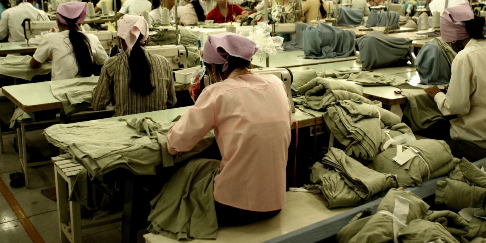
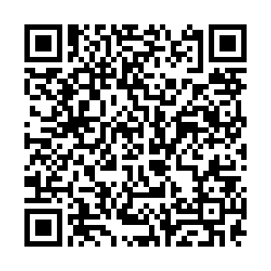
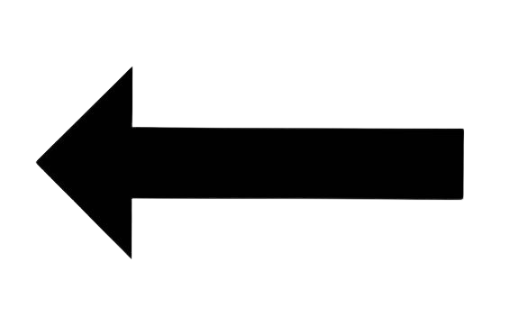

The positives of keeping Sweatshops
- - Sweatshops, besides their working conditions, can be seen as beneficial to a family or community. Sweatshop workers are paid around $50 per month which is seen as terrible pay in western eyes, however we need to remember that one kilogram of rice can cost between $0.25 and $0.48 (wholesale.)
- - If sweatshops were to close, many people would go into much more dangerous working environments, such as subsistence farming, a type of farming that is not economically viable, can cause environmental damage and can even cause death.
- - Sweatshops also reduce poverty as they give people the jobs that pay more than their other, previously mentioned, more dangerous jobs.
- - Sweatshops can also empower women as they delay marriage and pregnancy and increase school enrollment.
- - Sweatshops are also seen as good from a western standpoint too, since the sweatshops supply westerners with cheap clothing that can be used for people in need.
The Negatives of keeping Sweatshops
- - Sweatshops do, however, suffer from grueling workdays and still little pay, even though the prices of food and other products are different.
- - Sweatshops can also be bad for the environment as they can lead to nearby water sources, which could be used for drinking, being polluted with dyes and sorts.
- - Sweatshops also have appalling and often dangerous working conditions that children from as young as six years old have to work in.
- -Sweatshops Destroy the childhood of children too, which could lead to further problems for that child in the future.
- -Sweatshops often have unfair wages between men and women too, which shows how they treat their workers unfairly and act corrupt.

Sources are listed here
- The Eagle Online
- Quora
- Earth.org
- Adam Smith Institute
- Do Something.org
And the National Global Candidate Booklet personal standpoint

